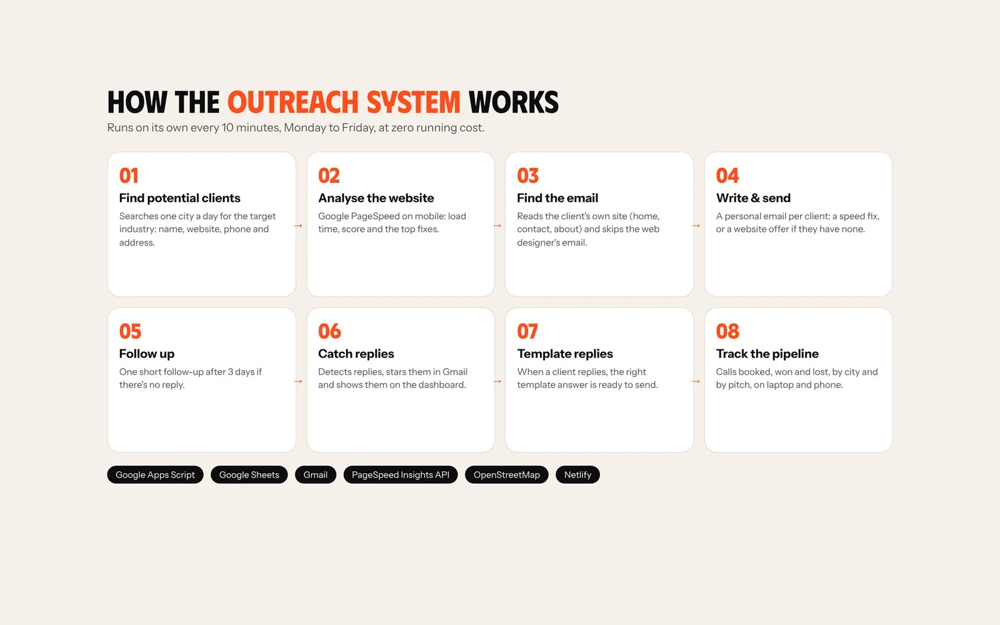

Finding new clients is the job every agency founder puts off. For each potential client I had to find the business, check its website, run a speed test, dig out an email address and write something that didn't read like spam: 15 to 20 minutes each. So I built a system that does the research for me and leaves the conversation to me. It runs every weekday, on its own, and costs nothing to run. Here's how it works.
The rule: automate the research, not the relationship
Mass emails don't work. Business owners ignore generic pitches, and sending lots of identical emails gets a Gmail account flagged as spam. So the system only automates the slow, repetitive parts: searching, testing, finding the email and writing a first draft. Every reply comes back to me, and I decide what to send.
Four principles: personal (every email is about the client's own website), honest (fast websites are skipped and every email links to the public Google report), slow (at most 10 emails a day, one every 10 minutes, weekdays only) and polite (one follow-up, an easy opt-out, and no means no).
Step 1: find potential clients
Each weekday at about 9 AM the system searches the next city on its list for the target type of business using OpenStreetMap's free Overpass API. It saves the name, website, phone, address and city to a Google Sheet, skips duplicates, and only searches when fewer than a day's worth of leads are waiting. Businesses without a website are kept with a no_website status: they're leads for a website build. Google Places is an optional upgrade for richer data.

Step 2: analyse the website
Every website is tested with the Google PageSpeed Insights API in mobile mode, because that's how most customers first visit a business. The system saves the Speed Index, the performance score, Largest Contentful Paint and the two fixes Google estimates would save the most time. If the site loads in 3 seconds or less, it's marked fast and nobody gets an email about a problem they don't have.
Step 3: find the right email address
The script reads the business's own home, contact and about pages and collects every address it finds. It decodes emails hidden from bots, prefers addresses on the business's own domain, ranks owner, info and contact addresses higher, and ignores the web designer's email in the footer, image file names that look like emails and noreply addresses. No email? The lead stays in the sheet with its phone number for a call.
Step 4: a personal email, and one follow-up
Slow websites get an email with the real load time and score, one line on what slow pages cost in customers, a link to the public Google report and an offer of the two fixes for free. Businesses without a website get an offer to build one with links to my projects. The only ask is a one-word reply. If nobody answers in three days, one short follow-up goes out in the same thread, and then the business is left alone.

Step 5: catch every reply
Every 10 minutes the system runs one Gmail search across its conversations. A reply marks the lead as replied, saves the text, stars the email, labels it so the Gmail app notifies me, and moves it to the top of the dashboard. Bounces are marked and never retried.
Step 6: dashboards and template replies
A private dashboard shows today's numbers, what's coming up, system health, emails per day and the funnel from lead to client, on a laptop and as an app-like view on the phone. Opening a lead shows every detail and a reply box with the right template already filled in: send the fixes, sample design, price, book a call or a polite close. I edit and send it from the agency's Gmail in the same conversation.


The tech, and why it costs nothing
Google Apps Script runs all the logic on a schedule, Google Sheets is the database (one row per business, 27 columns), Gmail sends and receives, PageSpeed Insights does the audit, OpenStreetMap finds the leads and a small Netlify page hosts the dashboard. Everything fits in free allowances: a few minutes of script time a day and 10 to 20 emails against Gmail's 100.

Early results and what's next
The system went live in November 2026. In its first two days it found 205 businesses in three cities, analysed 8 websites and sent 5 personal emails. All 7 websites that could be tested were slower than 3 seconds on mobile, with an average of 5.5 seconds. Next: Google Places for better lead data, more website checks (WhatsApp button, booking form, basic SEO), testing two versions of the first email, and raising the limit to 20 a day.